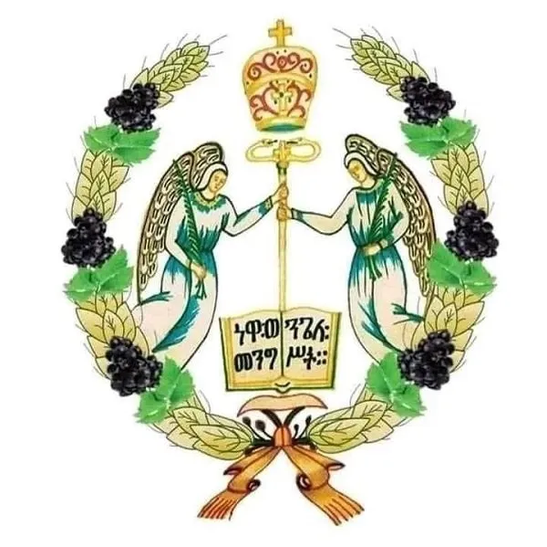

ቅዱስ ሚካኤል ሰንበት ትምህርት ቤት
የጥምቀት በዓል በክርስትና ኃይማኖት ተከታዮች በተለይም የኢትዮጵያ ኦርቶዶክስ ተዋሕዶ ቤተ ክርስቲያን፣ ኢየሱስ ክርስቶስ በ፴ ዓ/ም በፈለገ ዮርዳኖስ በመጥምቁ ዮሐንስ እጅ በዮርዳኖስ ባሕር የተጠመቀበትን ዕለት የሚያስታውሰው፣ ኤጲፋንያ በመባልም የሚታወቀው ደማቅ በዓል ነው። መገለጥ፣ መታየት ማለት ነው። የኢየሱስ ክርስቶስ ጥምቀት ታሪክ የሚገኘው በማቴዎስ ወንጌል ምዕራፍ ፫ ቁ ፲፫–፲፯ ውስጥ ነው።
በአገራችን፣ ጥር ፲ ቀን፣ በከተራ፣ በገጠር ወራጅ ውሃ የሚከተርበት፣ ታቦታት ከየአቢያተ ክርስቲያናቱ በዓሉ ወደሚከበርበት ቦታ በምዕመናን ታጅበው እየዘመሩ ይሄዳሉ። እዚያም በየተዘጋጀው ድንኳን እንዲያርፉ ተደርጎ ሌሊቱን እዛው ያሳልፋሉ።በከተሞች ግን ሰው ሰራሽ ግድብ ይሰራል።
ጥር ፲፩ ቀን የጥምቀት ዕለት፤ በገጠር፣ ጎኅ ሲቀድ ምእመናን እዚያው በድንኳኑ ዙሪያ አስቀድሰው ሲጨርሱ በካህናት መሪነት ሁሉም ወደከተራው ያመራና ውሃውም ተባርኮ ሕዝቡ ይረጫል። የክርስትና ስማቸውንም የረሱ ወደካህናቱ ይቀርቡና አዲስ የክርስትና ስም ይቀበላሉ። «ተጠምቀ ሰማያዊ በእደ መሬታዊ፤ ሰማያዊው በመሬታዊው እጅ ተጠመቀ» የሚለው የዕለቱ ቀለም በሊቃውንቱ አንደበት በያሬዳዊ ዜማ ጎልቶ ይሰማል። ከዚህ ሥነ ሥርዓት በኋላ በመቋሚያ፣ በከበሮና በጽናፅል በሚታጀብ ኃይማኖታዊ ዝማሬና ዘፈን፣ ወንዱ በሆታ፤ ሴቱ በእልልታ፤ ካህኑ በሃሌታ ታቦተ ሕጉን አጅበው፣ እንደያመጣጣቸው ወደየ ቤተክርሲያናቸው ይመለሳሉ።
አጃቢው ሕዝብ ከሚያዜሟቸው፦
«እዩት ወሮ ሲመለስ
መድኃኔ ዓለም በፈረስ ወሮ ሲመለስ፤
የሚካኤል አንበሳ
ሎሌው ሲያገሳ።
ማር ይፈሳል ጠጅ
በእመቤቴ ደጅ ።»
እያሉ ምእመናኑ የታቦት ዘፈኑንም ያዘልቁታል።
ታቦተ ሕጉም ቅጽር ግቢው ሲደርስ ሁሉም ምኞታቸውን በፍሡሕ ገጽ እንዲህ እያሉ ይገልጻሉ።
«በሕይወት ግባ በዕልልታ
የዚህ ኹሉ አለኝታ
በሕይወት ግቢ እምዬ
እንድበላ ፈትዬ
ሲያምር ዋለ ሲታይ
የኹላችን ሲሳይ»
በየዓመቱ በመላ ኢትዮጵያ የሚከበረው የጥምቀት በዓል፣ ታቦታት ከመንበራቸው ወጥተው፣ በየጥምቀተ ባሕሩ የሚከበሩ በመኾናቸው፣ ሀገሬውን ብቻ ሳይሆን ዓለም አቀፋዊ መስህብ በመፍጠሩ፣ ቱሪስቶችን መሳቡ አልቀረም። ጥቁርና ነጭ፣ ቀይና ብጫ ያለም ዘር፣ ከአዲስ አበባ እስከ ላሊበላ፣ ከአክሱም እስከ ጎንደር በሁሉም ሥፍራዎች በዚሁ ዓይነት ደምቆ ይከበራል። የምእመናኑም ሆነ የካህናትና ዲያቆናት አለባበስ ፍፁም በሚማርክ ባህላዊ አልባሳት የተዋበ በመሆኑ ከውጭም ሆነ ከአገር ውስጥ ለሚመጡ ጎብኚዎች ሁል ጊዜ አዲስ ነው።
ሊቃውንቱ እንደሚናገሩት፣ ዘመነ አስተርእዮ የሚባለው፣ ከጥር ፲፩ ቀን ጀምሮ እስከ ጾመ ነነዌ (ጥር ፲፯ ቀን) ያለው ጊዜ ነው። በዚህ ጊዜ ውስጥ አምላክ ሰው ሆኖ በሥጋ መገለጡ፣ በዮርዳኖስ በተጠመቀ ጊዜ የአንድነትና የሦስትነት ምሥጢር መታወቁ፣ በቃና ዘገሊላ በተደረገው ሠርግ ላይ የመጀመሪያው ተዐምር በመፈጸሙ፣ አምላካዊ ኃይሉ መገለጡ፣ እየታሰበ ምስጋና ይቀርባል። ይህ ሁነት ኢትዮጵያ ብሂልን ከባህል ጋር አዛምዳ ከሌላው የክርስቲያን ዓለም በተለየ አከባበር በዓሉን ማክበሯ፣ አያሌ ቱሪስቶችን ለመሳብ አስችሏታል።